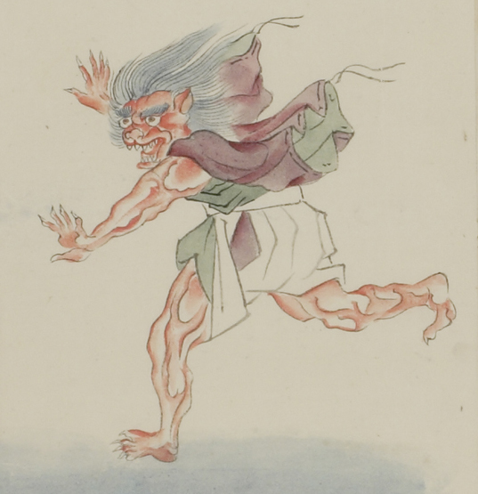

赤い肌の鬼。髪は逆毛立ち後ろになびいている。眉毛が濃く、耳は尖っている。中央から裂けたような口を大きく開き、並んだ牙をむいている。顔つきは獣のようである。足は４本指のように見え、手足の指に鋭い爪が生えている。裏地が緑色の紫色の着物に白い袴をまとい、裾を絡げている。着物の両袖を脱ぎ、羽のように背からはためかせている。画面左手に向って走っている。
著作者：村田嘉言写／出典：親書誌：U426_nichibunken_0062：中納言長谷雄卿圖巻；チュウナゴンハセオキョウエマキ／日付：2007／資源識別子：U426_nichibunken_0062_0004_0000
Copyright (c)2010- International Research Center for Japanese Studies, Kyoto, Japan. All rights reserved.